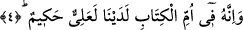
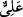
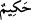

Cenab-ı Hakk’ın Kur’ân’ı “muksemun bih” yaparak onunla yemin etmesi şuna
işârettir: Allah katında Kur’an’dan daha büyük ve ondan daha yüce bir şey yoktur. Eğer
olsaydı Allah Kur’an’la değil de o yüce şeyle yemin ederdi. Zîrâ seven, hiçbir şeyi
sevgili üzerine tercih etmez. İşte Allah Kur’ân’la yemin etmiştir ki yemini son derece
muhkem ve önemli olsun. Aynı şekilde Kur’ân’ın vasfından da daha önemli bir şey
yoktur. Eğer olsaydı Allah, Kur’an’ın vasfına değil, ondan daha önemli olan şeye yemin
ederdi.
4. O, katımızda bulunan Ana Kitap’ta mevcud, yüce ve hikmetle dolu bir kitaptır.
“O, katımızda bulunan ana Kitap’ta” Levhi-Mahfuz’da “mevcud, yüce,” kıymetli ve
şerefli, muhkem “ve hikmetle dolu bir kitaptır.”
O kitap Levh-i Mahfuz’dadır. Levh-i Mahfuz kitabın aslıdır. Yani semâvî kitaplar
cinsinin aslıdır. Bütün semâvî kitaplar, peygamberlerin yanında olduğu gibi Levh-i
Mahfuz’da da tespit edilmiş, oradan vahiy yoluyla istinsâh edilerek alınmıştır.
Râgıb’a göre, “Ana Kitap’ta” sözü “Levh-i Mahfuz’da” demektir. Levh-i Mahfuz’un
ana kitap oluşu ise bütün ilimlerin oraya bağlı ve oradan doğmuş olmasındandır.
“Kitap”, yazılı sahifenin ismidir. O kitap “yüce”dir. Diğer kitaplar arasında çok değerli
ve şereflidir. “Hikmetle dolu,” son derece hikmet sahibidir. Yahut pek muhkem/sağlam
olup bir başka kitapla hükmünün kaldırılması yahut değiştirilmesi söz konusu değildir.
Âyetteki “__WORD__/aliyy” ve “__WORD__/hakîm” sözleri “inne”nin haberleridir. “İnne” ile
haberleri arasındakiler ise hükmün mevkiini beyândır. Sanki, kitabın bu iki sıfatla
vasıflandığı zikrolunduktan sonra şöyle buyrulmuş olmaktadır: “Bu kitap, katımızda çok
şerefli ve çok değerli olan ana kitaptadır.” Celâleyn’de dediği gibi bunun mânâsı şudur:
Allah Teâlâ, bu kitabın kendi katında ana kitap olan Levh-i Mahfuz’da bu sıfatla sâbit
olduğunu kasdetmektedir.
Yüce Allah Levh-i Mahfuz’u beyaz inciden yaratmıştır. Allah Teâlâ her gün ona 360
kere nazar eder. Her nazarında nice şeyler yaratır. Diriltir, öldürür, aziz eder, zelil eder
ve dilediğini yapar. Haberde şöyle gelmiştir: Kur’ân’ın bütün harfleri Levh-i
Mahfuz’dadır. Her harfin altında öyle derin mânâlar vardır ki, onları Allah’tan başkası
bilemez. Bunun için hiçbir lafız, Kur’an lafzı makâmında olamaz. Hiçbir harf de
Kur’ân’ın harfi makâmında olamaz. Kur’an hem lafız hem de mânâ bakımından
mûcizedir. İnsânî kalp hakikî ve mânevî levha olunca Kur’an Peygamberimiz (s.a.)’in
kalbine indi. Dünya ve âhiret bakımından ebedî olarak orada yerleşti. Aynı şekilde
Kur’an, mânâ bakımından Peygamber vârisleri olan evliyâ ve ulemânın kalplerine
inmiştir. Ebû Yezid el-Bistâmî (k.s.) hazretleri bunu haber vermiştir.
Nasıl ki Allah Teâlâ her gün Levh-i Mahfuz’a 360 defa nazar ediyorsa, aynı şekilde